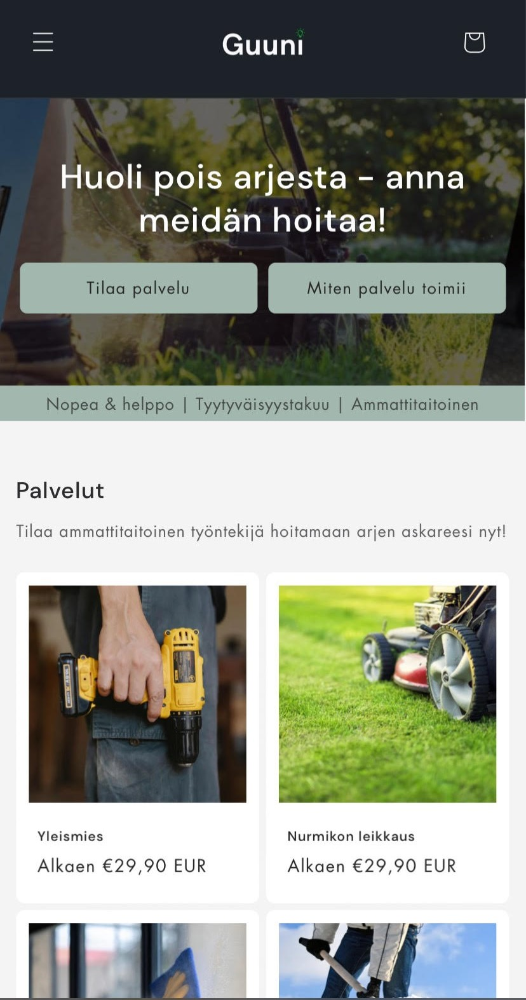
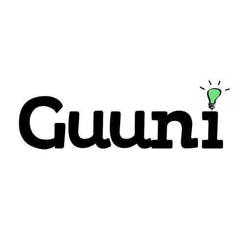
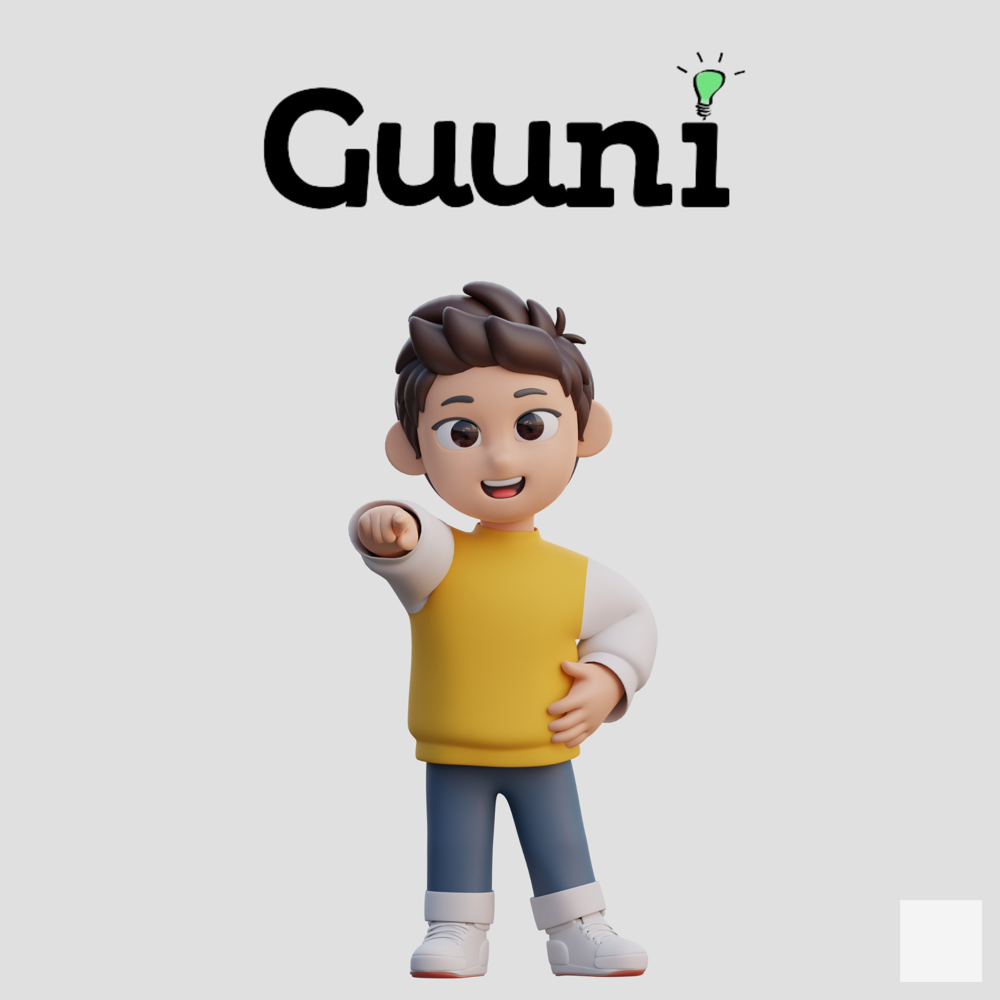
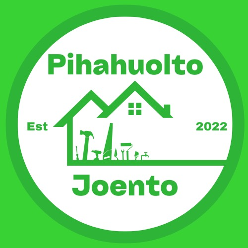
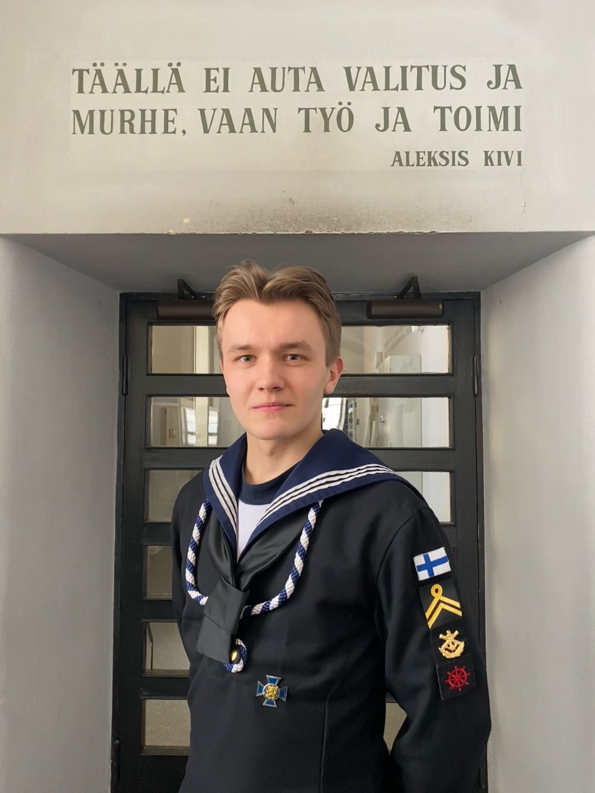
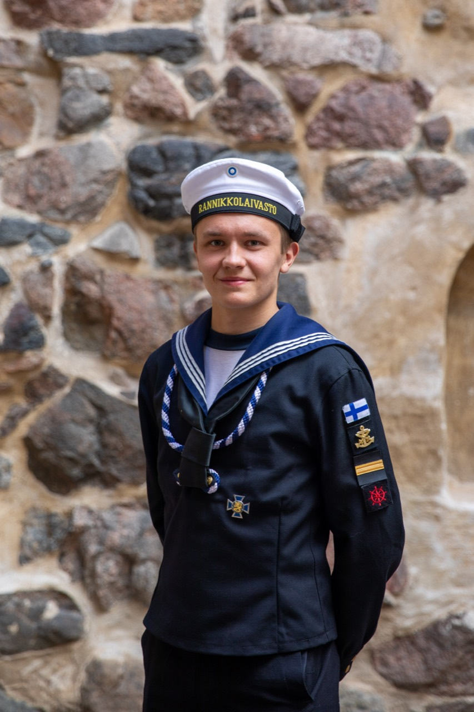
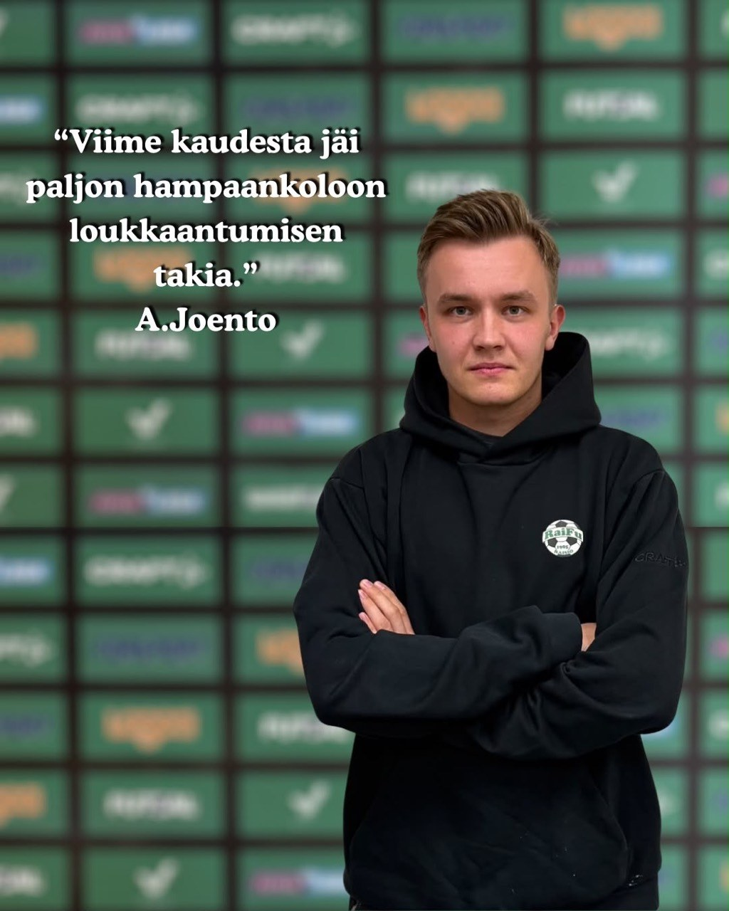

Myynti ja yritystoiminta
Olen opiskellut yritystoimintaa, myyntiä ja teollisuustalouden perusteita sekä soveltanut niitä omassa asiakastyössäni.
Portfolio
01 / KOULU & OSAAMINEN
Turun ammattikorkeakoulu · Insinööri (AMK)
Opinnoissani yhdistyvät tekniikka, talous ja johtaminen. Olen suorittanut muun muassa yritystoiminnan, myynnin, operatiivisen johtamisen, ohjelmoinnin ja työelämäviestinnän opintoja. Yrittäjyys on antanut mahdollisuuden soveltaa opittua käytännössä.
Valmistaudun opiskelijavaihtoon Saksassa. Englannin kielitaitoni on erinomainen, ja opiskelen myös saksaa.
Olen opiskellut yritystoimintaa, myyntiä ja teollisuustalouden perusteita sekä soveltanut niitä omassa asiakastyössäni.
Olen suorittanut ohjelmoinnin, teknisen piirtämisen, matematiikan ja operatiivisen johtamisen opintoja.
Erinomainen englanti, saksan kielen opinnot ja valmistautuminen opiskelijavaihtoon Saksassa.
Koulutus painottaa projektiosaamista, tuotannon kehittämistä, toimitusketjuja ja Lean-ajattelua.
KÄYTÄNNÖN PROJEKTI · 2026
Osallistuin Turussa järjestettyyn Since AI Hackathoniin. Tapahtumassa monialaiset tiimit ratkoivat yritysten todellisia haasteita ja rakensivat niihin toimivia tekoälyprototyyppejä intensiivisen viikonlopun aikana.
Tutustu tapahtumaan ↗02 / YRITTÄMINEN
Palvelualustan kehittämistä ja asuntoflippausta.
WINFI OY / PALVELUALUSTA
Guuni oli WinFi Oy:n palvelualustaprojekti, joka yhdisti arjen apua tarvitsevat asiakkaat ja paikalliset tekijät. Olin mukana palvelun suunnittelussa, markkinoinnissa ja asiakashankinnassa. Guunin toiminta on päättynyt.



WINFI OY / ASUNTOFLIPPAUS
Olin mukana asunnon hankinnassa, kustannusten suunnittelussa ja remontin toteutuksessa. Keittiön muutos näyttää konkreettisesti, mitä suunnitelmasta syntyi.
↔ Vedä kuvan jakajaa ja vertaa muutosta.

 Ennen
Jälkeen
Ennen
Jälkeen
03 / TOIMINIMIYRITTÄMINEN
Kiinteistöjen ulkotyöt asiakaskohteissa.


PIHAHUOLTO JOENTO / TMI
04 / VARUSMIESPALVELUS
Johtamista ja vastuuta merellä.
Palvelin laivastossa ja suoritin reserviupseerikurssin Merisotakoulussa Suomenlinnassa. Koulutus painottui merenkulkuun. Olen reservin aliluutnantti.
Koulutus opetti johtamaan, tekemään päätöksiä ja kantamaan vastuuta ryhmästä myös vaativissa tilanteissa.


05 / FUTSAL
Pelaan futsalia RaiFun miesten edustusjoukkueessa. Harjoittelu ja ottelut ovat opettaneet minulle sitoutumista, nopeaa päätöksentekoa ja sitä, miten jokainen kantaa vastuunsa joukkueessa.
Kausi 2026–2027

SEURAAVA ASKEL / TURKU
Etsin työ- tai harjoittelupaikkaa myynnin, liiketoiminnan kehittämisen tai projektinhallinnan parista.
Olen valmis ottamaan vastuuta, oppimaan nopeasti ja tuomaan käytännönläheistä energiaa tiimiin.